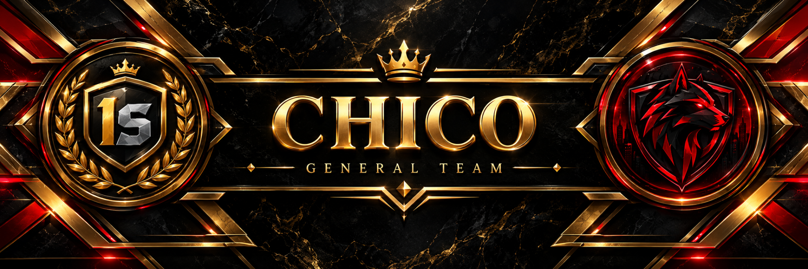

CHICO GENERAL TEAM / COMMAND CENTER
لوحة القيادة
متابعة دقيقة، قرارات أسرع، وبيانات من اللعبة فقط.
◷ 2026-11-09

✦ ELITE ADMINISTRATION CENTERCHICO COMMAND
CHICO COMMAND
CENTER
أداء الفريق تحت السيطرة — متابعة دقيقة بدون إحصائيات غير مسجلة.
01 / ONE STATE RP
Tickets الأسبوعية
غير مسجّل
Flags الأسبوعية
غير مسجّل
Server Flag Rate
غير مسجّل
متوسط Rating
غير مسجّل
LEADERBOARD
أفضل الإداريين
◇لا توجد إحصائيات مسجّلة بعد
بدون أي إحصائيات تجريبية
PERFORMANCE WATCH
قائمة المتابعة
◇لا توجد تنبيهات من البيانات المسجلة
البيانات غير المكتملة لا تُعرض على أنها صفر
ROSTER STATUS
تغطية الأسبوع
الإداريون—
إداريون لهم قراءات—
إداريون بدون قراءات—
SYSTEM INTEGRITY
البيانات غير المكتملة لا تُعرض على أنها صفر
✓
بدون أي إحصائيات تجريبية